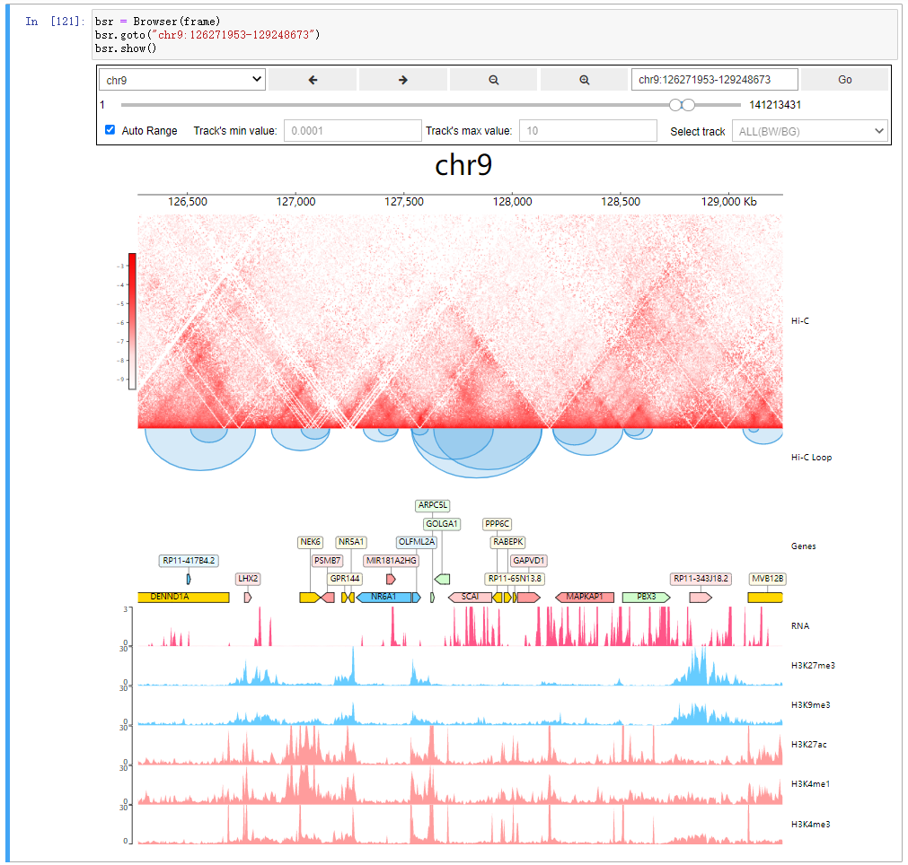

Welcome to CoolBox’s documentation!¶
Project page: GitHub
- Installation & Usage
- Quickstart (API)
- Quickstart (CLI)
- CoolBox Gallery
- Colormaps of Hi-C contact map
- Resolution, Balance and Normalize
- Smoothing matrix with gaussian filter
- Hi-C features like Virtual4C, DiScore, InsuScore
- TADs
- Peak Coverage
- Hi-C Diff
- Differential Chromatin Interaction
- JointView
- Hist track styles
- BigWig Coverage
- Arcs style
- Color
- Arcs coverage
- SNP Manhattan plot
- Ideogram
- DNA features
- Decay curve
- Customizing CoolBox
- API Reference